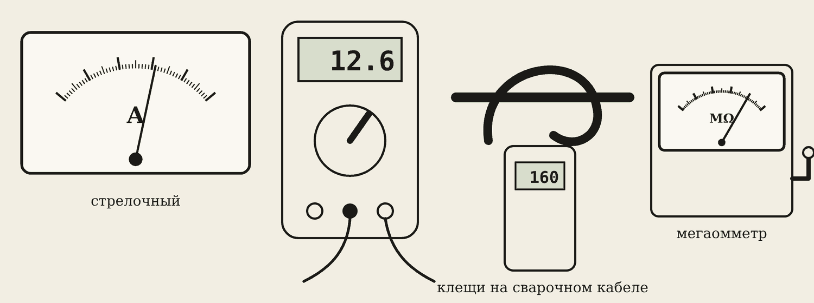
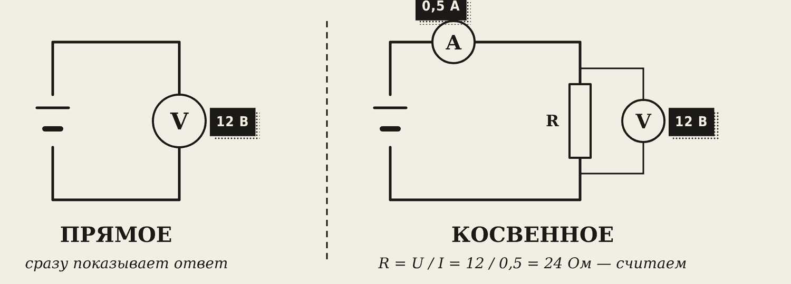
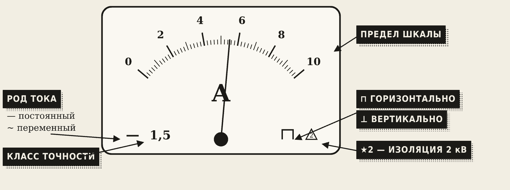
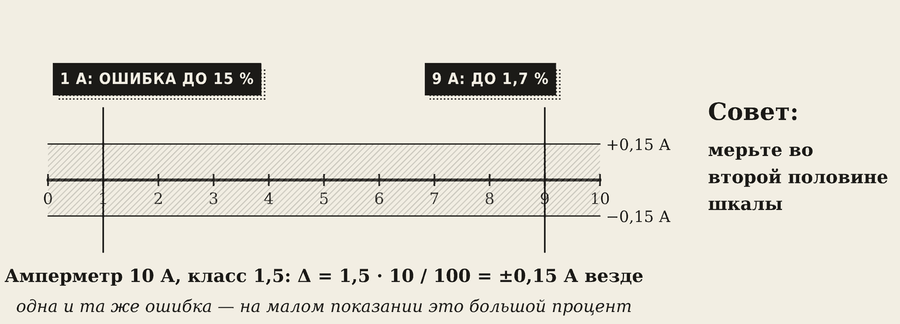
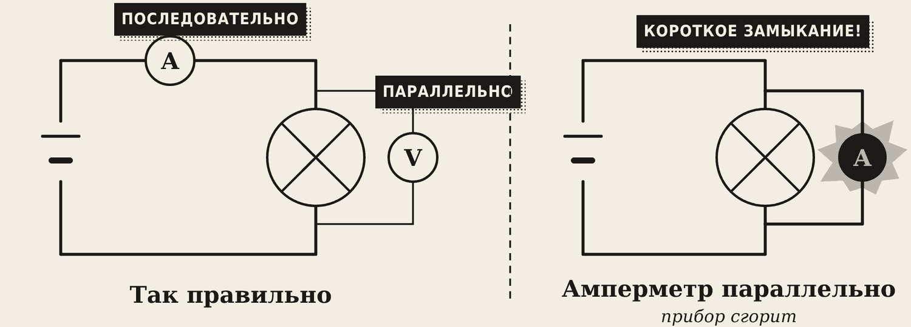
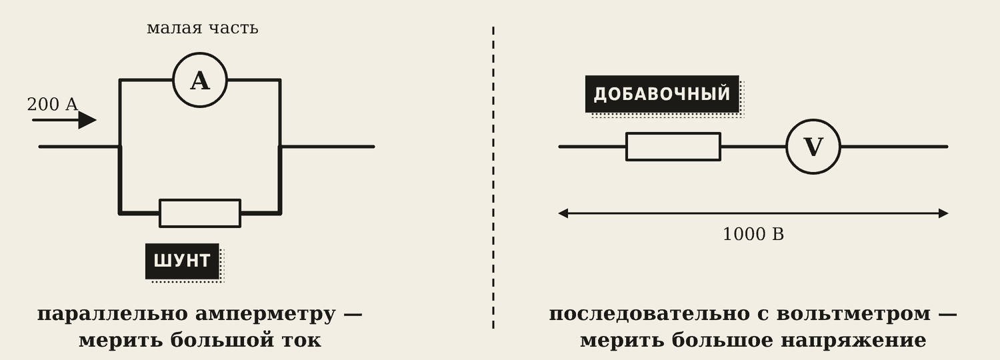
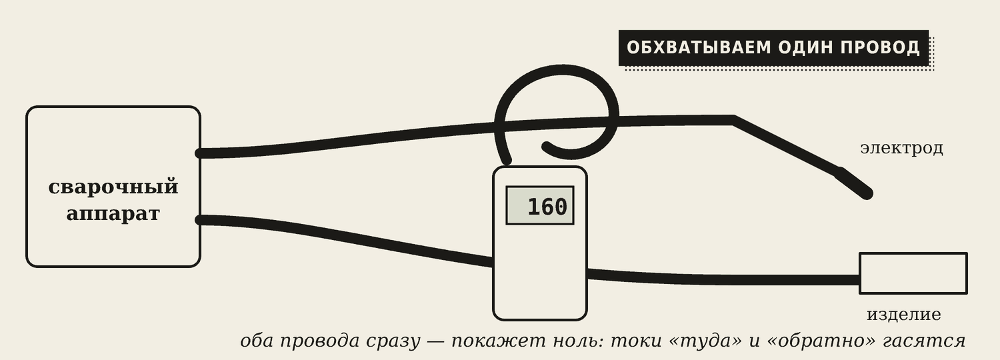
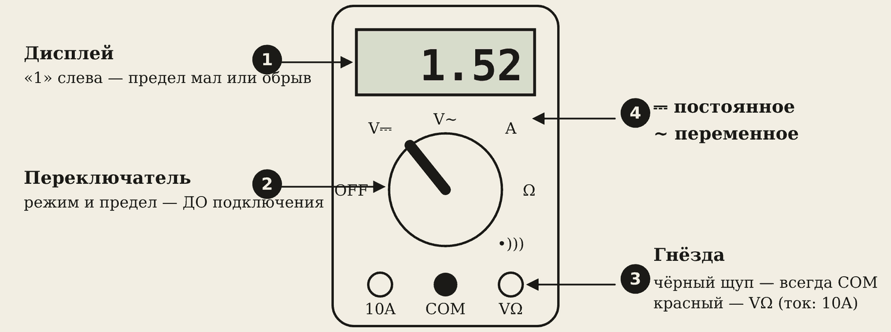
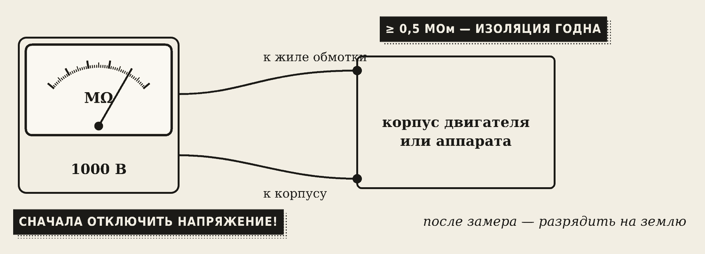

1. Какие бывают измерения и приборы


- Прямое измерение — прибор сразу показывает нужную величину: вольтметр — напряжение.
- Косвенное измерение — нужную величину считают по формуле из показаний других приборов: R = U / I по вольтметру и амперметру.
Какие бывают приборы:
- по тому, что меряют: амперметр (ток), вольтметр (напряжение), омметр (сопротивление), ваттметр (мощность), счётчик (энергия);
- по виду: стрелочные (аналоговые) и цифровые;
- по роду тока: постоянного (знак —) и переменного (знак ~).
Примеры: электросчётчик в квартире, амперметр на панели сварочного аппарата.
2. Что написано на шкале

На шкале стрелочного прибора есть значки:
- род тока: — постоянный, ~ переменный;
- класс точности — число, например 1,5;
- положение прибора: ⊥ вертикально или ⊓ горизонтально — в другом положении он врёт;
- звёздочка с цифрой — каким напряжением проверена изоляция (2 = 2 кВ).
Цена деления — сколько единиц в одном делении шкалы. Берут два соседних оцифрованных числа, делят разницу на число делений между ними. Например, между 2 и 4 А — 4 деления: цена деления 0,5 А.
3. Погрешности и класс точности
Ни один прибор не показывает абсолютно точно. Разницу между показанием и настоящим значением называют погрешностью.
- Абсолютная погрешность Δ = Xизм − Xдейств — на сколько ошибся прибор, в амперах или вольтах.
- Относительная δ = Δ / X · 100 % — ошибка в процентах от измеренного значения.
- Приведённая γ = Δ / Xпредел · 100 % — ошибка в процентах от предела шкалы.
Класс точности — наибольшая допустимая приведённая погрешность прибора.
Δдоп = класс · Xпредел / 100

Пример. Амперметр на 10 А, класс 1,5. Δдоп = 1,5 · 10 / 100 = ±0,15 А — на любой отметке шкалы. Показывает 9 А: относительная ошибка 0,15 / 9 ≈ 1,7 %. Показывает 1 А: 0,15 / 1 = 15 % — почти бесполезно.
Запомните
Мерьте во второй половине шкалы: там та же абсолютная ошибка даёт маленький процент. Если стрелка в начале шкалы — переключите прибор на меньший предел.
4. Как включать амперметр и вольтметр

- Амперметр — последовательно, в разрыв цепи: весь ток должен пройти через него. Его сопротивление очень маленькое.
- Вольтметр — параллельно, к двум точкам. Его сопротивление очень большое.
Осторожно
Амперметр, включённый параллельно нагрузке или прямо на источник, — это короткое замыкание: у него почти нулевое сопротивление. Прибор сгорит, а может и взорваться предохранитель.

- Шунт — точный маленький резистор параллельно амперметру. Большая часть тока идёт через шунт, через прибор — малая. Так меряют ток в сотни ампер.
- Добавочный резистор — последовательно с вольтметром. На нём падает большая часть напряжения. Так меряют высокое напряжение.

Токоизмерительные клещи меряют ток без разрыва цепи: ими обхватывают один провод. Так проверяют реальный сварочный ток. Если обхватить сразу оба провода — покажет ноль: токи «туда» и «обратно» гасят друг друга.
5. Мультиметр

Мультиметр — несколько приборов в одном: V (напряжение постоянное и переменное), A (ток), Ω (сопротивление), прозвонка (пищит).
Правила работы:
- Сначала выберите режим и предел, потом подключайте щупы.
- Чёрный щуп — всегда в гнездо COM. Красный — в VΩ для напряжения и сопротивления, в A / 10A — для тока.
- Держите щупы только за изолированную часть.
- Не знаете, какое напряжение, — ставьте самый большой предел и уменьшайте.
- На дисплее «1» слева или «OL» — значение больше предела, переключите выше.
Осторожно
Самая частая авария: красный щуп остался в гнезде A после измерения тока, а вы меряете напряжение розетки. Это короткое замыкание через мультиметр. После измерения тока сразу переставляйте щуп обратно в VΩ.
Сопротивление и прозвонку меряют только на обесточенной цепи. Прозвонкой ищут обрыв провода: пищит — провод целый.
6. Мегаомметр

Мегаомметр проверяет изоляцию повышенным напряжением (500–2500 В). Обычный мультиметр для этого не годится: он меряет маленьким напряжением, а изоляция пробивается при большом.
- Для электропроводки до 1000 В берут мегаомметр на 1000 В.
- Сопротивление изоляции должно быть не меньше 0,5 МОм.
- Так проверяют сварочные кабели, обмотки двигателей и сварочных аппаратов.
Осторожно
Перед замером — отключить напряжение и убедиться, что его нет. После замера — разрядить проверенный провод на землю: в нём остаётся заряд высокого напряжения. Работают с мегаомметром только допущенные электрики.
Словарик
- Прямое измерение — прибор сразу показывает нужную величину.
- Косвенное измерение — величину считают по формуле.
- Цена деления — сколько единиц в одном делении шкалы.
- Абсолютная погрешность Δ — разница между показанием и настоящим значением.
- Относительная погрешность δ — ошибка в процентах от измеренного значения.
- Приведённая погрешность γ — ошибка в процентах от предела шкалы.
- Класс точности — наибольшая допустимая приведённая погрешность.
- Шунт — резистор параллельно амперметру для измерения больших токов.
- Добавочный резистор — резистор последовательно с вольтметром для высоких напряжений.
- Токоизмерительные клещи — меряют ток без разрыва цепи.
- Прозвонка — проверка цепи на обрыв звуковым сигналом.
- Мегаомметр — прибор для проверки сопротивления изоляции.
Эталоны в тетрадь
Перепишите в тетрадь по билетам — каждый эталон на отдельную страницу, с рисунком и строкой «Мой пример».
Виды измерений и приборов
Прямые и косвенные измерения. Классификация электроизмерительных приборов, обозначения на шкале.
- Прямое измерение — прибор сразу показывает нужную величину (вольтметр — напряжение). Косвенное — считаем по формуле (R = U / I по показаниям вольтметра и амперметра).
- По тому, что меряют: амперметр, вольтметр, омметр, ваттметр, счётчик энергии.
- По виду: стрелочные (аналоговые) и цифровые. По роду тока: постоянного (—), переменного (~).
- На шкале указаны: род тока (— или ~), класс точности (число, например 1,5), положение прибора (вертикально / горизонтально), звёздочка с цифрой — напряжение проверки изоляции.
- Примеры: счётчик в квартире, амперметр на панели сварочного аппарата.
Погрешности и класс точности
Погрешности измерений: абсолютная, относительная, приведённая. Класс точности.
- Абсолютная погрешность Δ = Xизм – Xдейств — на сколько ошибся прибор (в амперах, вольтах).
- Относительная δ = Δ / X · 100 % — ошибка в процентах от измеренного.
- Приведённая γ = Δ / Xпредел · 100 % — ошибка в процентах от предела шкалы.
- Класс точности — наибольшая допустимая приведённая погрешность. Пример: амперметр класса 1,5 на 10 А может ошибаться на ±0,15 А.
- Совет: мерьте во второй половине шкалы — там относительная ошибка меньше.
Как включать амперметр и вольтметр
Измерение тока и напряжения: схемы включения, шунт и добавочный резистор, токоизмерительные клещи.
- Амперметр — последовательно, в разрыв цепи: весь ток идёт через него. Его сопротивление очень маленькое. (Схема.)
- Вольтметр — параллельно, к двум точкам. Его сопротивление очень большое. (Схема.)
- Ошибка: амперметр, включённый параллельно, создаёт короткое замыкание и сгорает.
- Шунт — резистор параллельно амперметру, чтобы мерить большой ток. Добавочный резистор — последовательно с вольтметром, чтобы мерить большое напряжение.
- Токоизмерительные клещи меряют ток без разрыва цепи: ими обхватывают один провод. Так проверяют сварочный ток.
Мультиметр и мегаомметр
Мультиметр: режимы и правила работы. Измерение сопротивления, прозвонка, проверка изоляции мегаомметром.
- Мультиметр — несколько приборов в одном: V (напряжение постоянное и переменное), A (ток), Ω (сопротивление), прозвонка (пищит).
- Правила: сначала выбрать режим и предел, потом подключать; держать щупы за изолированную часть; для измерения тока переставить красный щуп в гнездо A.
- Сопротивление и прозвонка — только на обесточенной цепи. Прозвонкой ищут обрыв провода: пищит — целый.
- Мегаомметр проверяет изоляцию повышенным напряжением. Для электропроводки до 1000 В берут мегаомметр на 1000 В, сопротивление изоляции должно быть не меньше 0,5 МОм. Так проверяют и сварочное оборудование.
Проверь себя
Сначала ответьте сами — в тетради или вслух. Потом нажмите на вопрос, чтобы увидеть ответ.
1R нашли по показаниям вольтметра и амперметра. Это прямое или косвенное измерение?
Косвенное: R посчитали по формуле R = U / I.
2Амперметр на 5 А, класс 1,0. Какая допустимая ошибка?
Δдоп = 1,0 · 5 / 100 = ±0,05 А.
3Почему лучше мерить во второй половине шкалы?
Абсолютная ошибка одинакова по всей шкале, а относительная — меньше, когда показание большое.
4Как включают амперметр? Что будет, если включить его параллельно?
Последовательно, в разрыв цепи. Параллельно — короткое замыкание, прибор сгорит.
5Зачем нужен шунт?
Чтобы мерить большие токи: основная часть тока идёт через шунт, через прибор — малая.
6Почему клещи показывают ноль, если обхватить оба провода сразу?
Токи «туда» и «обратно» равны и противоположны, их поля гасят друг друга.
7На дисплее мультиметра «1» слева. Что делать?
Значение больше предела — переключить на больший предел.
8Можно ли мерить сопротивление на цепи под напряжением?
Нет, только на обесточенной цепи.
9Какое сопротивление изоляции считается нормой для проводки до 1000 В?
Не меньше 0,5 МОм (проверяют мегаомметром на 1000 В).
Попробуйте в лаборатории
Откройте на телефоне или компьютере — ничего устанавливать не нужно.
Ответы к «Проверь себя»
- Косвенное: R посчитали по формуле R = U / I.
- Δдоп = 1,0 · 5 / 100 = ±0,05 А.
- Абсолютная ошибка одинакова по всей шкале, а относительная — меньше, когда показание большое.
- Последовательно, в разрыв цепи. Параллельно — короткое замыкание, прибор сгорит.
- Чтобы мерить большие токи: основная часть тока идёт через шунт, через прибор — малая.
- Токи «туда» и «обратно» равны и противоположны, их поля гасят друг друга.
- Значение больше предела — переключить на больший предел.
- Нет, только на обесточенной цепи.
- Не меньше 0,5 МОм (проверяют мегаомметром на 1000 В).